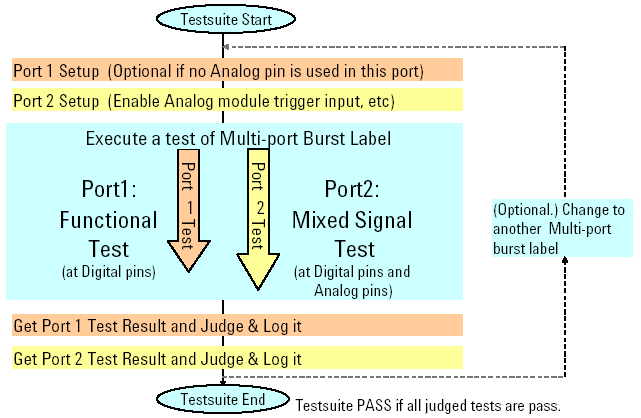

Concurrent Test Execution Flow in Test Method Program
The multi-port test to be executed is specified by the start label in the Testsuite dialog window. A multi-port burst label is used as the start label in general. When the multi-port test is started by an API in the test method program, the per-port tests are executed simultaneously.
On the other hand, changing the setup in each port and retrieving/judging/logging test results in each port are performed serially in the order that you have programmed using the APIs in the test method program.
The following figure shows the execution flow in the test method program when a digital functional test is executed in a port ("Port1") and a mixed signal test where any analog modules are used is executed in another port ("Port2").

One important note related to concurrent operation of analog and digital tests is the difference between ADC and DAC operation with relation to the digital sequencer. During an ADC test, an analog signal driven by the analog sequencer is sent to the device. The decoded data is captured using digital capture data settings. Since the digital capture data resides in the vector memory, the data cannot be uploaded and processed until the digital sequencer is terminated. This shows the impact on CCT test time when an ADC test is combined with a digital test. In the case where a DAC test is executed in CCT mode with a digital test, data is sampled and stored in the analog domain and is accessible at the end of the sampling process. There is no impact related to DAC testing other than the data processing.
Functional changes
- Introduced before SmarTest 6.3.2